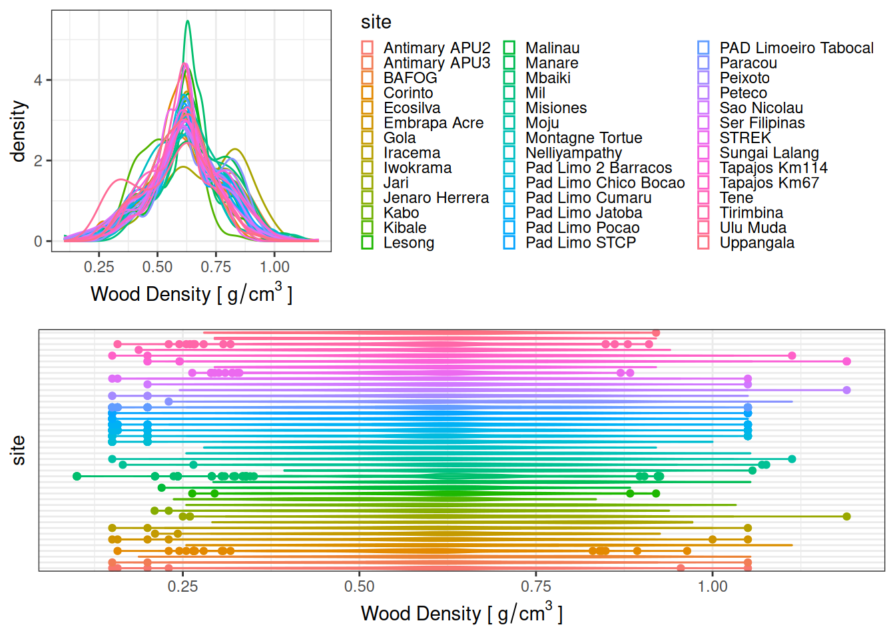

Code
taxo <- read_tsv("outputs/taxonomy_v4.tsv")
wd <- getWoodDensity(taxo$genus_cleaned, taxo$species_cleaned) %>%
group_by(genus, species) %>%
summarise(wd = mean(meanWD)) %>%
na.omit() %>%
rename(genus_cleaned = genus, species_cleaned = species)
taxo_wd <- left_join(taxo, wd)
g1 <- ggplot(taxo_wd, aes(wd, col = site)) +
geom_density() +
theme_bw() +
xlab(expression("Wood Density [" ~ g / cm^3 ~ "]")) +
theme(legend.key.size = unit(.5, "line"))
g2 <- ggplot(taxo_wd, aes(site, wd, col = site)) +
geom_violin() +
geom_boxplot(width = .2) +
coord_flip() +
theme_bw() +
theme(
legend.position = "none",
axis.text.y = element_blank(),
axis.ticks.y = element_blank()
) +
ylab(expression("Wood Density [" ~ g / cm^3 ~ "]"))
cowplot::plot_grid(g1, g2, nrow = 2)